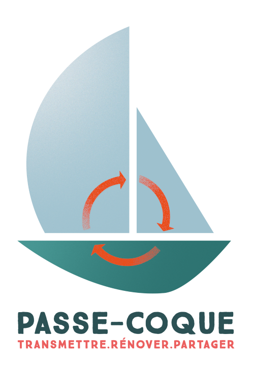
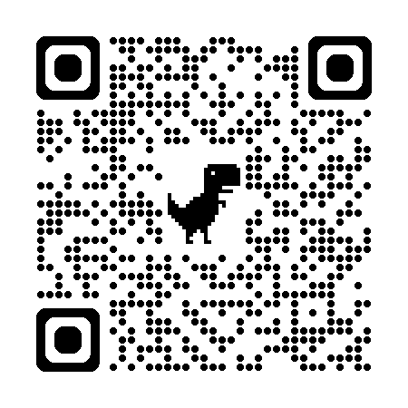

PASSE-COQUE
L'économie circulaire au service de l'action sociale et solidaire dans la plaisance
RENOVER
Plus de 30 bateaux revitalisés à ce jour à travers notre chantier.
Qu'ils soient naviguants ou futurs habitats insolites.
TRANSMETTRE
De nouveaux projets naissent régulièrement pour faire vivre
ces bateaux de manière sociale et solidaires.
Les Jeannettes, Watter, Hublow, Pordin Nancq, Low Tech, etc..

PARTAGER
La mise en place d'un chantier participatif, d'un boat club solidaire et d'évenements
regroupant nos bateaux (Rubi's cup, Carter cup, Passe-Coque Trophy) permettent de faire
connaitre et de partager notre action avec le plus grand nombre.
Passe-Coque
Chantier : 12 ZA de Kerran, 56470 Saint Philibert
Bureau : Lab Ocean, La Trinité sur Mer
http://www.passe-coque.com
contact@passe-coque.com
Pour nous rejoindre,
pour aller sur le site :

Passe-Coque est une association agréée d'utilité générale
enregistré sous le numero n° W56101154 siret n° 89120237600010